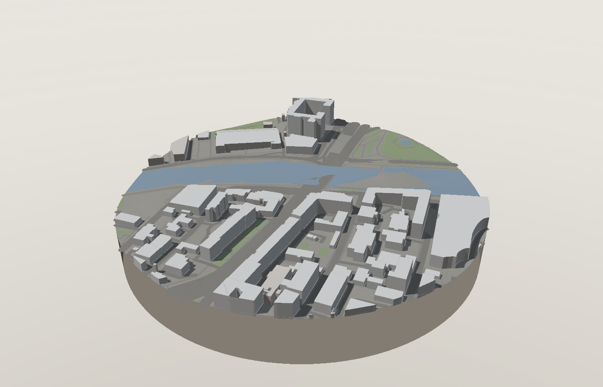
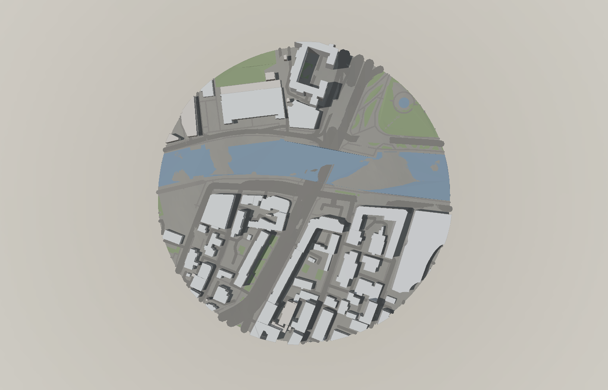
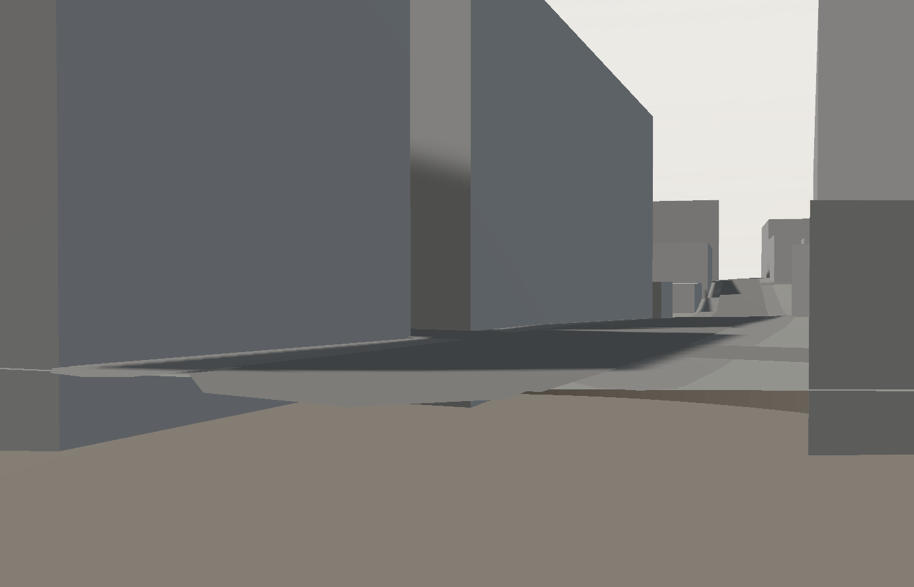
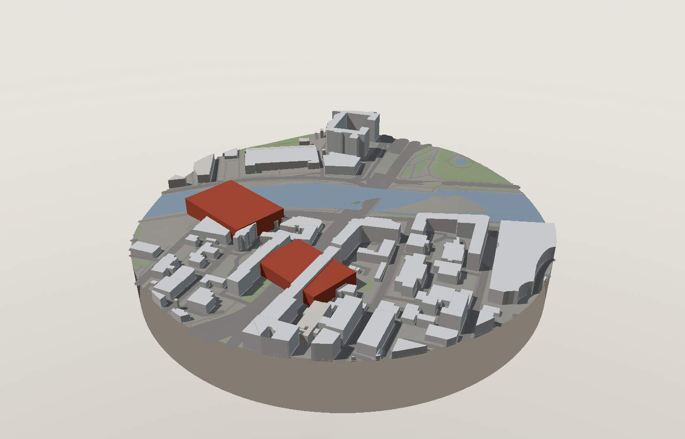
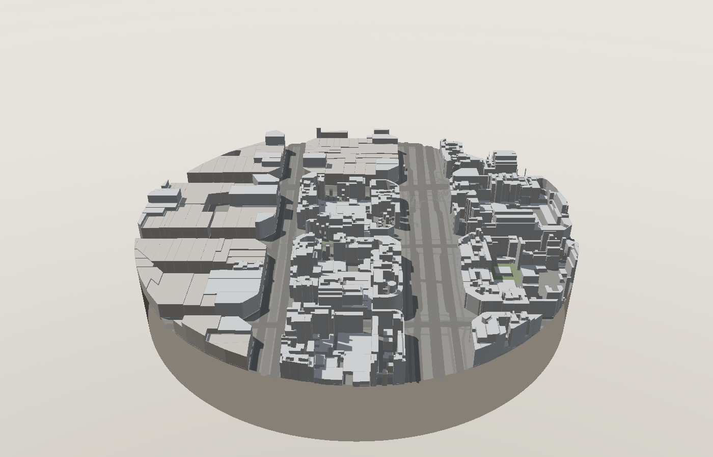

Ставишь точку на карте, задаёшь радиус — получаешь трёхмерный керн местности: застройка с реальными высотами, рельеф, улицы, тени на выбранную дату и расчётные показатели плотности. Дальше — фотореалистичный рендер, аналитическая записка или проектные объёмы через языковую модель. Работает для любого города, где есть OpenStreetMap. Drop a point on the map, set a radius — get a three-dimensional core of the site: buildings at real heights, terrain, streets, shadows for a chosen date, and computed density metrics. Then a photoreal render, an analytical brief, or proposed massing volumes via a language model. Works for any city covered by OpenStreetMap.

Любой градостроительный проект начинается с вопроса «что вокруг». Обычный путь — выгрузить OSM, почистить в QGIS, поднять высоты, экспортировать в трёхмерный редактор, настроить свет. Это несколько часов на участок, и повторять приходится для каждой площадки. В результате контекст либо изучают поверхностно, либо не сравнивают варианты вовсе. Every planning project starts with «what surrounds the site». The usual route — export OSM, clean it in QGIS, extrude heights, move to a 3D editor, set up lighting — takes hours per site and has to be repeated for each one. Context ends up studied superficially, and alternatives rarely get compared at all.
Готовые сервисы либо привязаны к одному городу, либо показывают картинку без цифр, либо требуют подписки и загрузки файлов. Мне был нужен инструмент, где путь от «где» до «понял» занимает минуту, показатели считаются честно, а результат уходит в подачу и обратно в QGIS. Existing services are either tied to a single city, or show a picture with no numbers, or require a subscription and file uploads. I wanted the path from «where» to «understood» to take a minute, with metrics computed honestly and results exporting into a presentation and back into QGIS.
Круг радиусом 100–1200 м: здания с высотами из OSM, рельеф из открытых DEM, улично-дорожная сеть, вода, озеленение. A circle of 100–1200 m: buildings with OSM heights, terrain from open DEM, street network, water, greenery.
Положение солнца по алгоритму NOAA на любую дату, час и широту. Тени пересчитываются мгновенно — видно, кто кому загораживает свет. NOAA solar position for any date, hour and latitude. Shadows update instantly — you see who blocks whose light.
Плотность застройки, коэффициент плотности, средняя и максимальная высота, перепад рельефа и доля зданий с достоверными высотами. Site coverage, floor area ratio, mean and maximum height, terrain relief, and the share of buildings with reliable heights.
Кадр → фотореалистичная визуализация. Цифры + кадр → градостроительный разбор. Текстовое задание → проектные объёмы прямо в сцене. Frame → photoreal render. Numbers + frame → an urban design brief. A text prompt → proposed volumes placed in the scene.




Своего бэкенда у инструмента нет: браузер сам ходит в Overpass за данными OSM, в AWS Terrain Tiles за высотами и — по ключу пользователя — к выбранному провайдеру моделей. Локальный сервер нужен только чтобы отдать статические файлы. There is no backend: the browser queries Overpass for OSM data, AWS Terrain Tiles for elevation, and — with the user's own key — the chosen model provider. The local server only serves static files.
Тяжёлое — сеть, разбор мультиполигонов, обрезка по кругу, экструзия и слияние геометрии — вынесено в фоновый поток. Наружу уезжают типизированные массивы, права на буферы передаются без копирования, поэтому сцена продолжает вращаться, пока строится следующий участок. The heavy work — networking, multipolygon parsing, circular clipping, extrusion and geometry merging — runs in a worker. Typed arrays are transferred, not copied, so the scene keeps spinning while the next site is being built.
| ПроблемаProblem | Решение и результатSolution and outcome |
|---|---|
| Overpass отвечает десятками секундOverpass takes tens of seconds | Кэш ответов в IndexedDB на неделю. Повторное открытие участка — ≈1 с вместо 41 с (плотный квартал Эшампле, 933 здания). IndexedDB response cache. Reopening a site takes ≈1 s instead of 41 s (dense Eixample block, 933 buildings). |
| Интерфейс замирал на сборкеUI froze during builds | Весь конвейер — в Web Worker, геометрия отдаётся типизированными массивами с передачей владения буферами. The whole pipeline moved into a Web Worker; geometry leaves as typed arrays with transferred buffer ownership. |
| Карта импорта не наследуется воркерамиImport maps are not inherited by workers | Штатный BufferGeometryUtils импортирует three по имени и потому неприменим — слияние геометрии написано своё, на приведении к неиндексированному виду. The stock BufferGeometryUtils imports three by bare name and thus breaks — geometry merging is hand-written over non-indexed conversion. |
| Вращение сцены тормозилоOrbiting felt heavy | Кадр считается только при изменениях; во время вращения падает разрешение и отключается постобработка, в покое качество возвращается; карта теней пересчитывается лишь при смене солнца. Frames render only on change; during orbit the pixel ratio drops and post-processing is off, restored at rest; the shadow map updates only when the sun moves. |
| Здания висели над склономBuildings floated over slopes | Верх объёма отсчитывается от отметки в центре пятна, низ опускается до самой низкой точки контура — на рельефе здание садится, а не парит. Volume tops follow the elevation at the footprint centroid; bottoms drop to the lowest contour point, so buildings sit on the slope instead of hovering. |
| Край земли торчал силуэтомThe ground edge cut a silhouette | Дымка привязана к удалению камеры, а не к размеру участка: горизонт растворяется и на общем плане, и при взгляде сверху. Fog is tied to camera distance rather than site size, so the horizon dissolves both in overview and from above. |
Модель настолько точна, насколько заполнен OpenStreetMap. Высота берётся из
тега height, затем из этажности, и только потом — из типового значения по
назначению здания. Доля восстановленных высот выводится в показателях, а сами такие
объёмы можно подсветить отдельным цветом: видно, какой части модели верить нельзя.
The model is only as good as OpenStreetMap. Height comes from the
height tag, then from storey count, and only then from a typical value by
building type. The share of inferred heights is reported in the metrics, and those
volumes can be highlighted in a separate colour — so it stays visible which part of the
model cannot be trusted.
Ближайший шаг — накопительный расчёт инсоляции: прогнать солнце по суткам с получасовым шагом и покрасить землю и фасады по числу солнечных часов. Российские санитарные нормы требуют непрерывной инсоляции, поэтому такой расчёт превращает картинку в аргумент. Дальше — двусторонний обмен с QGIS и сравнение показателей «до и после» размещения проектных объёмов. The next step is cumulative insolation: sweep the sun across a day in half-hour steps and colour ground and façades by hours of direct sunlight. Russian sanitary norms mandate continuous insolation, so this turns an image into an argument. After that: two-way exchange with QGIS, and before/after comparison of metrics when proposed volumes are placed.
Инструмент — вторая часть связки: сначала сбор данных о среде (прибор съёмки фасадов на маршруте), затем её моделирование и анализ. The tool is the second half of a pair: first collecting data about the urban environment (a street-facade survey rig), then modelling and analysing it.